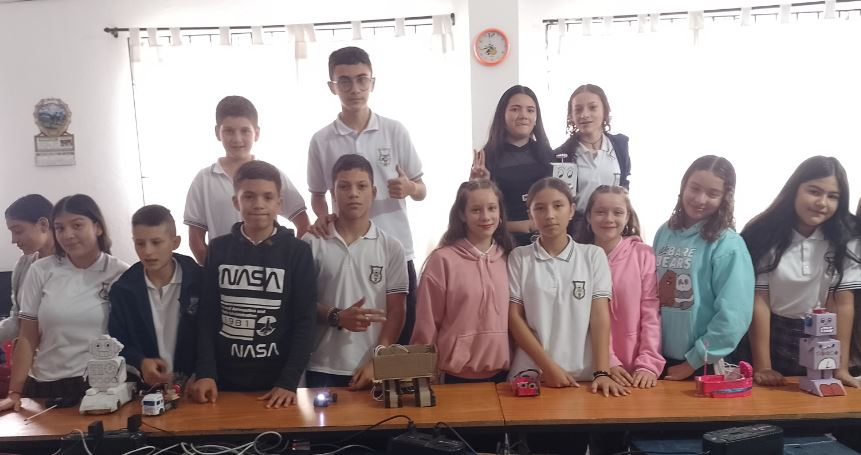

Nuestra Institución
La IE RURAL FELIPE HENAO JARAMILLO, es un establecimiento que brinda educación de Calidad a niños y jóvenes. Es una Institución de caracter Pública u Oficial, ubicada en el municipio de Andes - Antioquia, Colombia. Ofrece el Servicio Educativo a la comunidad educativa de la zona rural y urbana en los niveles de Preescolar, educación básica Primaria y Secundaria, y Media Vocacional a través de la Articulación con el SENA.
Nuestra Comunidad Educativa
Los Estudiantes
De acuerdo al modelo activo de participación y construcción, adoptado por la institución, EL ESTUDIANTE desarrollará desde las siguientes dimensiones competencias emprendedoras que le permitirán un desempeño adecuado en la cotidianidad escolar, para su proyección en la educación terciaria y/o laboral.
De acuerdo al modelo activo de participación y construcción, adoptado por la institución, EL ESTUDIANTE desarrollará desde las siguientes dimensiones competencias emprendedoras que le permitirán un desempeño adecuado en la cotidianidad escolar, para su proyección en la educación terciaria y/o laboral.
- Dimensión ética: corresponde a la actitud emprendedora de identificación de oportunidades y recursos del entorno. aplica los principios morales para la resoluciín de situaciones problémicas
- Dimensión comunicativa: corresponde al comportamiento autorregulado; el cual permite reconocer el papel del otro como agente válido para el establecimiento de diálogos y acuerdos.
- Dimensión espiritual: corresponde a la identificación de oportunidades y recursos del entorno, y el pensamiento flexible. Desarrolla creencias y actitudes de la vida espiritual, con la intención de experimentar estados de bienestar individual y colectivo.
- Dimensión afectiva: corresponde a la actitud de pensamiento flexible. Desarrolla la capacidad de aceptar y estimar a los demás tanto como ser aceptado y apreciado por otros.
- Dimensión cognitiva: corresponde la visión de futuro. significa Trabajar en equipo logrando participar activamente en la construcción y socialización del conocimiento propio y de otros